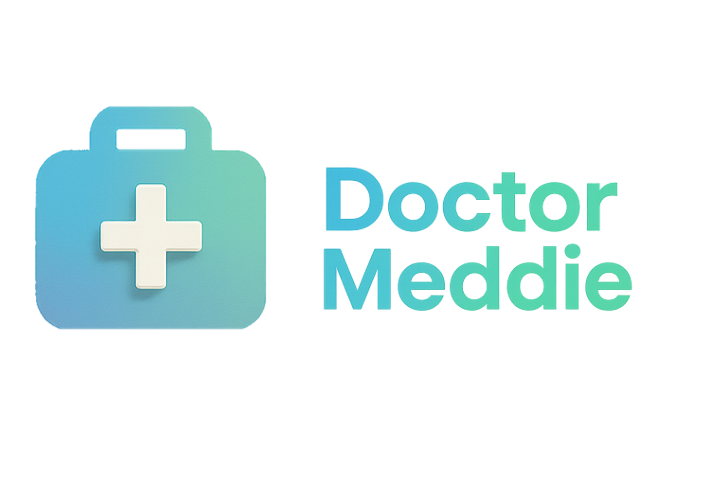

Desenvolvedor Mobile Flutter Pleno
Doctor Meddie

Definição da arquitetura Flutter para Android e iOS em uma healthtech internacional.
- Clean Architecture, SOLID, BLoC e Riverpod aplicados conforme a complexidade.
- Testes unitários, de widget e E2E para reduzir regressões.
- CI/CD com Codemagic e GitHub Actions para releases mais seguras.